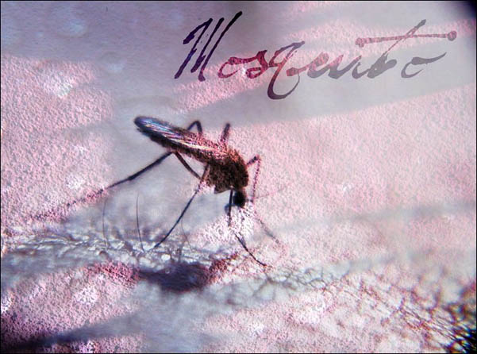
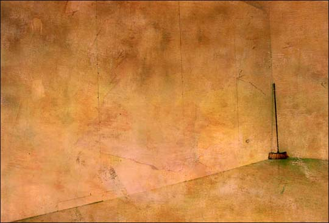
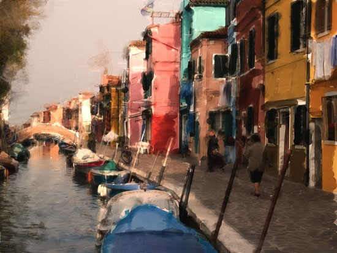
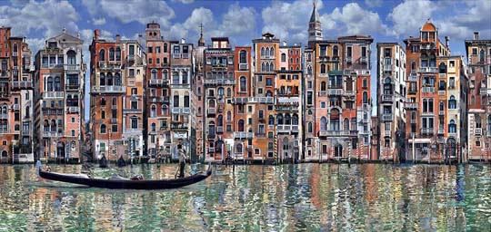
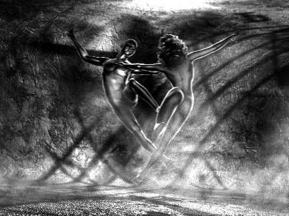
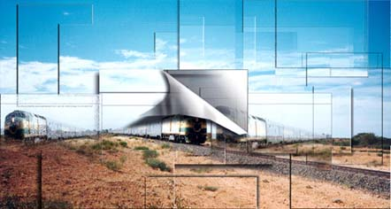
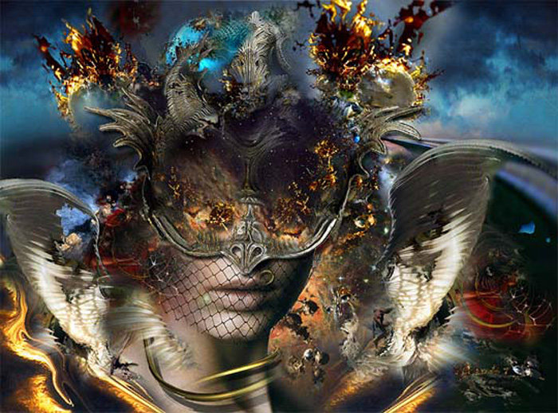

IMAGES OF THE DAY 94
01/21/2024 - 01/31/2024

01/21/2024
Photo-Based
Elements of Typography
Mosquito
by Christel Dall
Click image to access artist's full exhibit
01/22/2024
Photo-Based
Digital Photo Collage and Manipulation
D08
by George Daou
Click image to access artist's full exhibit
01/23/2024
Photo-Based
Surrealism: Erotic
My Sister Strains for the Sky
by Francisco D'Isa
Click image to access artist's full exhibit


01/24/2024
Photo-Based
Memories and Solitude
7 a.m.
by Ricardo Báez Duarte
Click image to access artist's full exhibit

01/25/2024
Photo-Based
Photographic and Painted Art
Image #d10
by Pavel Gospodinov
Click image to access artist's full exhibit
01/26/2024
Photo-Based
Chtulhu People
Image #d10
by Gulnur Guvenc
Click image to access artist's full exhibit

01/27/2024
Photo-Based
Homo Ludens
031 Homo Ludens 13 BBB
by Eva Gyorffy
Click image to access artist's full exhibit


01/28/2024
Photo-Based
Assembled Photography
Venetian
by Peter L. Hammond
Click image to access artist's full exhibit

01/29/2024
Photo-Based
Private Arts
Eagle
by Gregor Hartmann
Click image to access artist's full exhibit

01/30/2024
Photo-Based
Photomontage
Intersection
by Mamta B. Herland
Click image to access artist's full exhibit

01/31/2024
Photo-Based
Mixing Photographic Elements
Blind Date
by Werner Hornung
Click image to access artist's full exhibit